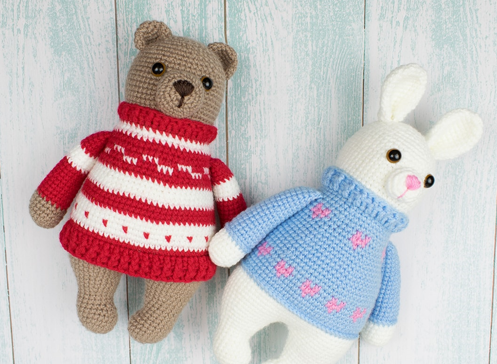

Bear Amigurumi Pattern
This amigurumi bear dressed in oozy red pullover won't be found in gym anytime soon. This cutie prefers to take it easy, cuddle up, and enjoy being squishy.
Crochet it today with our step-by-step Bear Amigurumi Pattern!
Materials:
- 4 ply yarn
- 2.0 mm crochet hook
- 9 mm safety eyes
- Fiberfill
- Sewing needle and scissors
Abbreviations:
ch = chain
st = stitch
sc = single crochet
inc = increase (2 sc in 1 st)
dec = decrease (2 sc together)
sl st = slip stitch
dc = double crochet
tr = treble crochet
(..) = repeat the instructions in brackets based on the given no. of times
[..] = total number of stitches
Legs (make 2):
Crochet with white yarn. Stuff as you go.
Rnd 1: sc x6 in magic ring [6]
Rnd 2: (inc) x6 [12]
Rnd 3: (sc, inc) x6 [18]
Rnd 4: (sc x5, inc) x3 [21]
Rnd 5-6: sc x21 [21]
Rnd 7: sc x7, dec x3, sc x8 [18]
Rnd 8: sc x7, dec x2, sc x7 [16]
Rnd 9: sc x16 [16]
Rnd 10: sc x7, inc x2, sc x7 [18]
Rnd 11: sc x18 [18]
Rnd 12: (sc x5, inc) x3 [21]
Rnd 13: sc x21 [21]
Rnd 14: (sc x6, inc) x3 [24]
Rnd 15: sc x24 [24]
Rnd 16: (sc x3, inc) x6 [30]
Crochet additional 14 sc or so to get the correct symmetrical position of the legs. Fasten off and cut off the yarn. Make the 2nd leg in the same way, but don't fasten off, continue crocheting the body.
To join the legs, make 3 ch, and crochet as follows:
Rnd 17: sc x30 of the first leg, sc x3, sc x30 of the second leg, sc x3 (from the opposite side) [66]
Rnd 18: sc x66 [66]
Rnd 19: (sc x21, inc) x3 [69]
Rnd 20: (sc x22, inc) x3 [72]
Rnd 21-23: sc x72 [72
Change to blue yarn and begin crocheting the pullover.
Rnd 24: sc x72 [72]
Rnd 25: BLO(sc) x72 [72]
Rnd 26-27: sc x72 [72]
Alternate the colors in the next three rounds.
Rnd 28: with blue yarn: sc x3 (with pink yarn: sc, with blue yarn: sc x5) x11, with pink yarn: sc, with blue yarn: sc x2 [72]
Rnd 29: with blue yarn: sc x2 (with pink yarn: sc x3, with blue yarn: sc x3) x11, with pink yarn: sc x3, with blue yarn: sc [72]
Rnd 30: with blue yarn: sc x2 (with pink yarn: sc, with blue yarn: sc, with pink yarn: sc, with blue yarn: sc x3) x11, with pink yarn: sc, with blue yarn: sc, with pink yarn: sc, with blue yarn: sc [72]
Rnd 31:sc x72 [72]
Rnd 32: (sc x10, dec) x6 [66]
Rnd 33-35: sc x66 [66]
Rnd 36: (sc x9, dec) x6 [60]
37-38: sc x60 [60]
Rnd 39: (sc x8, dec) x6 [54]
Alternate the colors in the next three rounds.
Fasten off leaving a small tail. Weave in the yarn in front loops of the rest 6 stitches, then pull to close the hole. Hide the end.
Rnd 40: with blue yarn: sc x2 (with pink yarn: sc, with blue yarn: sc x8) x5, with pink yarn: sc, with blue yarn sc x6 [54]
Rnd 41: with blue yarn: sc, (with pink yarn: sc x3, with blue yarn, sc x6) x5, with pink yarn: sc x3, with blue yarn: sc x5 [54]
Rnd 42: with blue yarn: sc, (with pink yarn: sc, with blue yarn: sc, with pink yarn: sc, with blue yarn: sc x6) x5, with pink yarn: sc, with blue yarn: sc, with pink yarn: sc, with blue yarn: sc x5 [54]
Rnd 43: (sc x7, dec) x6 [48]
Rnd 44: sc x48 [48]
Rnd 45: (sc x6, dec) x6 [42]
Rnd 46: sc x42 [42]
Change to white yarn and continue working on the head.
Rnd 47: BLO(sc) x42 [42]
Rnd 48: sc x42 [42]
Rnd 49: (sc x6, inc) x6 [48]
Rnd 50: sc x48 [48]
Rnd 51: (sc x7, inc) x6 [54]
Rnd 52-59: sc x54 [54]
Rnd 60: (sc x7, dec) x6 [48]
Rnd 61: sc x48 [48]
Rnd 62: (sc x6, dec) x6 [42]
Rnd 63: sc x42 [42]
Insert safety eyes between Rnd 57 and Rnd 58, at 9 st in between them.
Rnd 64: (sc x5, dec) x6 [36]
Rnd 65: (sc x4, dec) x6 [30]
Rnd 66: (sc x3, dec) x6 [24]
Rnd 67: (sc x2, dec) x6 [18]
Rnd 68: (sc, dec) x6 [12]
Rnd 69: dec x6 [6]
Cut off the yarn leaving a small tail. Weave the yarn end in front loops of the rest 6 st and pull to close the hold. Hide the tail.
Attach blue yarn to a front loop of Rnd 24 of the body and crochet slip stitches til the end of the round. Fasten off and hide the end.
Collar:
Attach blue yarn to a front loop of Rnd 46 of the body.
Rnd 1: ch x3 (counted as dc), dc x41, sl st [42]
Rnd 2: back post sc, ch x2, front post dc, (back post dc, front post dc) x20, sl st [42]
Fasten off and hide the end.
Arms (make 2):
Crochet with white yarn.
Rnd 1: sc x6 in magic ring [6]
Rnd 2: inc x6 [12]
Rnd 3: (sc, inc) x6 [18]
Rnd 4-7: sc x18 [18]
Change to blue yarn.
Rnd 8: sc x18 [18]
Rnd 9: BLO(sc) x18 [21]
Rnd 10-12: sc x18 [18]
Rnd 13: (sc x7, dec) x2 [16]
Rnd 14-17: sc x16 [16]
Rnd 18: (sc x6, dec) x2 [14]
Rnd 19-24: sc x14 [14]
Rnd 25: (sc x5, dec) x2 [12]
Stuff the arm. Flatten the edges, crochet sc in next 6 st through both layers, closing the hole. Fasten off leaving a tail for sewing.
Attach blue yarn to a front loop of Rnd 8 of the arm and crochet slip stitches til the end of the round. Fasten off and hide the end. Repeat the same for the second arm.
Muzzle:
Crochet with white yarn.
Rnd 1: sc x6 in magic ring [6]
Rnd 2: inc x6 [12]
Rnd 3: (sc, inc) x6 [18]
Rnd 4: sc x18 [18]
Fasten off and weave in the end.
Ears (make 2):
Work with white yarn.
Rnd 1: sc x6 in magic ring [6]
Rnd 2: inc x6 [12]
Rnd 3: (sc, inc) x6 [18]
Rnd 4: (sc x5, inc) x3 [21]
Rnd 5-7: sc x21 [21]
Rnd 8: sc x19, dec [20]
Rnd 9-10: sc x20 [20]
Rnd 11: (sc x8, dec) x2 [18]
Rnd 12-13: sc x18 [18]
Fasten off leaving a tail for sewing.
Assembly:
- Sew on the muzzle between Rnd 51 and Rnd 57. Put some fiberfill inside the muzzle before you finish.
- Sew on the ears at Rnd 63-64.
- Sew on the arms at the level of Rnds 43-44 of the body.
- Embroider a nose with pink yarn.
Great job! Your sweet bear amigurumi is done! Share your finished work and tag us in Instagram!